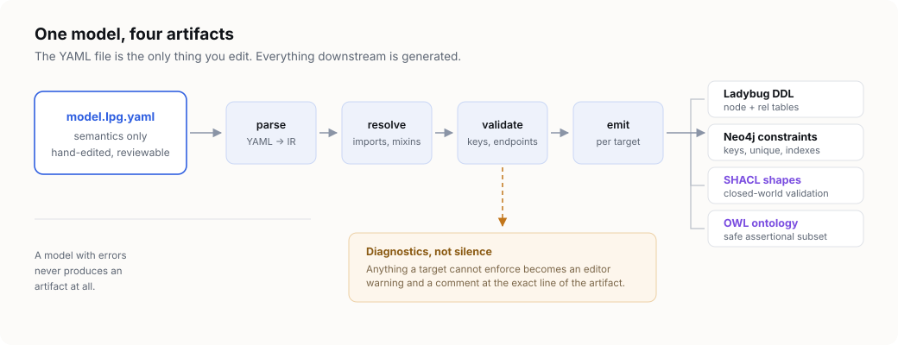
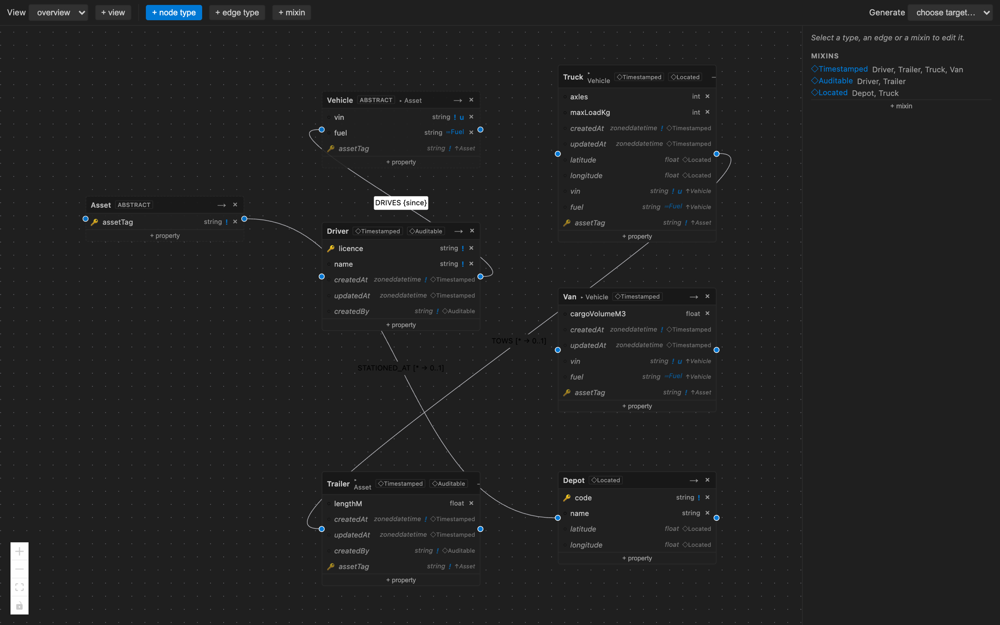
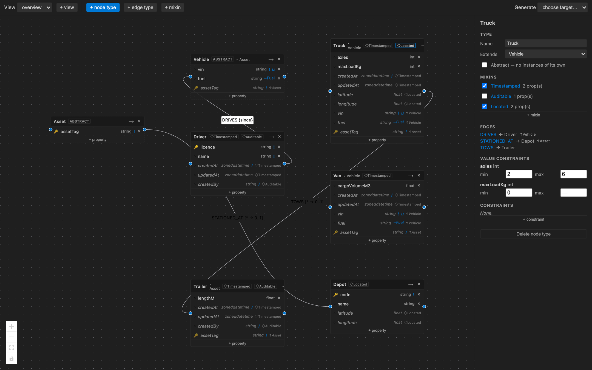
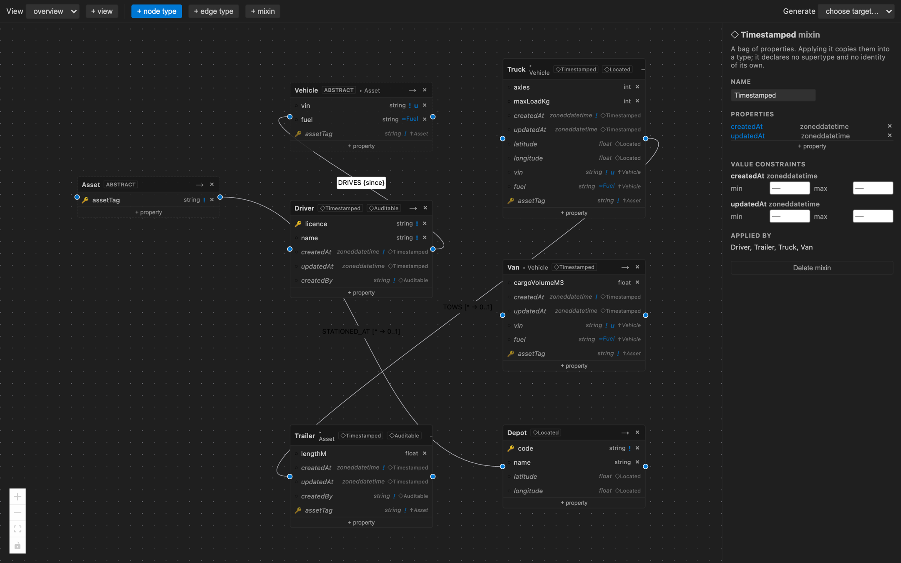
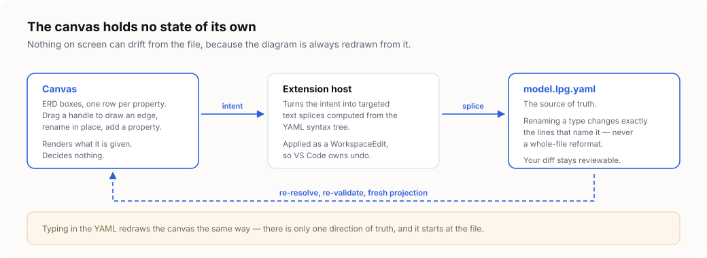
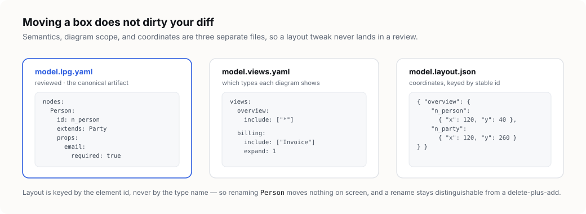

Design a property graph once. Generate every schema from it.
LPG Modeler turns one hand-editable model file into LadybugDB DDL, Neo4j constraints, SHACL shapes and an OWL ontology — and tells you, before you ship, exactly what each database is unable to enforce.

The problem it removes
A graph schema usually lives in four places at once: the DDL that creates the tables, the constraint script someone ran last quarter, a diagram in a wiki that stopped being true, and an ontology maintained by a different team. They drift. LPG Modeler makes three of those four generated artifacts.
Four sources, one truth, no agreement
The diagram says a property is required. The database never enforced it. Nobody finds out until a null reaches production.
One source, generated outputs
The model states the constraint. Every target either enforces it or declares, in writing, that it cannot.
Checked in CI
The same validation the editor runs also runs as a command, so a pull request can be gated on the model being valid.
This is the editor
The canvas opens beside the model file, in the manner of Markdown preview. Every box is a node type, every row a property, and every action on it a targeted edit to the YAML.

Asset and
Vehicle are abstract: dashed border, no table, no instances.
Truck sits three levels down — assetTag arrives from
Asset, vin from Vehicle, and each inherited row
names its source.
What you get
Eight things the extension does that a diagram tool or a hand-written DDL file cannot.
Inheritance and mixins are different tools
They look alike — both put properties on a type that the type did not declare — and they answer different questions. Conflating them produces a hierarchy shaped by which properties happen to travel together rather than by what a thing is, and that hierarchy exports an ontology nobody can use.

Extends is a
dropdown; mixins are checkboxes, because applying one is set membership
and a type may apply several.
↑Vehicle for a supertype,
◇Timestamped for a mixin.
FROM/TO pair per concrete subtype, while
PG-Schema keeps the abstract endpoint as written.

Because a mixin is not a label, it costs the generators nothing: its properties are
flattened into every type that applies it before any target sees the model, so a target
with no inheritance and one with rich subtyping generate the same columns. It contributes
no key — though a type may name a mixin's property in its own key. A mixin that nothing
applies is reported at warning, because it reaches no artifact at all.
Start from fleet.lpg.yaml,
which is the model in every screenshot above, or read the
model format for every key involved.
From this model, these artifacts
A small social domain: an abstract Party contributing the key, two concrete
subtypes, a mixin, and an edge that carries a property. Every tab below is real generator
output for the model on the left.
social.lpg.yaml
namespace:
prefix: social
iri: https://example.org/vocab/social#
mixins:
Timestamped:
props:
createdAt: { type: datetime, required: true }
nodes:
# Abstract root: gives the key to every descendant.
Party:
abstract: true
key: [id]
props:
id: { type: string, required: true }
Person:
extends: Party
mixins: [Timestamped]
props:
email: { type: string, required: true, unique: true }
born: { type: date }
Company:
extends: Party
props:
vat: { type: string }
Car:
key: [vin]
props:
vin: { type: string, required: true }
seats: { type: int }
edges:
# Abstract endpoint: expands per concrete subtype.
OWNS:
from: Party
to: Car
props:
since: { type: date }
# No properties: stays a plain relation in RDF.
LIKES:
from: Person
to: Company
Generated output
// Abstract node types are flattened to one table per
// concrete type, with inherited properties copied down.
// Abstract, no table emitted: Party
CREATE NODE TABLE IF NOT EXISTS Company (
vat STRING,
id STRING,
PRIMARY KEY(id)
);
CREATE NODE TABLE IF NOT EXISTS Person (
// UNENFORCED: 'email' is required in the model;
// LadybugDB has no NOT NULL.
// UNENFORCED: 'email' is unique in the model;
// only the primary key is unique.
email STRING,
born DATE,
createdAt TIMESTAMP,
id STRING,
PRIMARY KEY(id)
);
CREATE REL TABLE IF NOT EXISTS OWNS (
// 'Party' is abstract; expanded to 2 endpoint pairs.
FROM Company TO Car,
FROM Person TO Car,
since DATE
);
CREATE REL TABLE IF NOT EXISTS LIKES (
FROM Person TO Company
);
// Neo4j has no table DDL. A hierarchy is expressed as
// labels, so a Person node also carries every ancestor.
// Edition: community
// DOWNGRADE: NODE KEY requires Enterprise.
// Uniqueness only; presence unenforced.
CREATE CONSTRAINT car_key_unique IF NOT EXISTS
FOR (n:Car) REQUIRE (n.vin) IS UNIQUE;
// Person carries labels :Person :Party
// (hierarchy flattened to labels).
CREATE CONSTRAINT person_key_unique IF NOT EXISTS
FOR (n:Person) REQUIRE (n.id) IS UNIQUE;
CREATE CONSTRAINT person_email_unique IF NOT EXISTS
FOR (n:Person) REQUIRE n.email IS UNIQUE;
// UNENFORCED: 'email' is required; existence
// constraints require Enterprise.
CREATE INDEX person_created_at IF NOT EXISTS
FOR (n:Person) ON (n.createdAt);
// (:Person)-[:LIKES]->(:Company)
// (:Party)-[:OWNS]->(:Car)
# SHACL carries the constraints because it is
# closed-world, and so means what the model means.
@prefix sh: <http://www.w3.org/ns/shacl#> .
@prefix social: <https://example.org/vocab/social#> .
social:PersonShape a sh:NodeShape ;
sh:targetClass social:Person ;
sh:property [
sh:path social:email ;
sh:datatype xsd:string ;
sh:maxCount 1 ;
sh:minCount 1 ;
# UNENFORCED: 'email' is unique in the model;
# core SHACL cannot express uniqueness across
# instances without a SPARQL constraint.
] ;
sh:property [
sh:path social:id ;
sh:datatype xsd:string ;
sh:maxCount 1 ;
sh:minCount 1 ;
] .
# Reified from (:Party)-[:OWNS]->(:Car)
social:OwnsShape a sh:NodeShape ;
sh:targetClass social:Owns ;
sh:property [
sh:path social:ownsSubject ;
sh:minCount 1 ; sh:maxCount 1 ;
] ;
sh:property [
sh:path social:since ;
sh:datatype xsd:date ;
sh:maxCount 1 ;
] .
# Restricted to the safe assertional subset: classes,
# subClassOf and hasKey. No rdfs:domain, no rdfs:range,
# no cardinality restrictions — those state inference
# rules, not constraints. The SHACL artifact carries
# the constraints.
@prefix owl: <http://www.w3.org/2002/07/owl#> .
@prefix social: <https://example.org/vocab/social#> .
social:Person a owl:Class ;
rdfs:label "Person" ;
rdfs:subClassOf social:Party ;
owl:hasKey ( social:id ) .
social:Company a owl:Class ;
rdfs:label "Company" ;
rdfs:subClassOf social:Party ;
owl:hasKey ( social:id ) .
social:email a owl:DatatypeProperty ;
rdfs:label "email" ; rdfs:range xsd:string .
# (:Party)-[:OWNS]->(:Car) carries properties, so it is
# reified into a class. 'owns' is the shortcut.
social:Owns a owl:Class ; rdfs:label "OWNS" .
social:ownsSubject a owl:ObjectProperty .
social:ownsObject a owl:ObjectProperty .
social:owns a owl:ObjectProperty .
# (:Person)-[:LIKES]->(:Company) carries no properties,
# so it stays a plain object property.
social:likes a owl:ObjectProperty ; rdfs:label "LIKES" .
Nothing disappears quietly
Three kinds of loss exist before a line of generator code is written: LadybugDB has no multi-label nodes, Neo4j existence and node-key constraints are Enterprise-only, and OWL is open-world where a schema is closed-world. Each one is stated rather than absorbed.

The canvas edits the file, not a copy of it
The diagram is a companion view beside the YAML, in the manner of Markdown preview — not a replacement editor. It holds no model state: it posts an intent, the extension host computes the edits, and a fresh diagram comes back from the file.


Serious about RDF
A property graph schema and an OWL ontology do not mean the same thing, so the RDF export is split in two. SHACL carries the constraints because it is closed-world validation. OWL asserts only what is safe to assert.

rdfs:domain for an edge does not constrain anything — it instructs a reasoner to reclassify unrelated individuals, which inverts the meaning of the model rather than merely losing some of it.